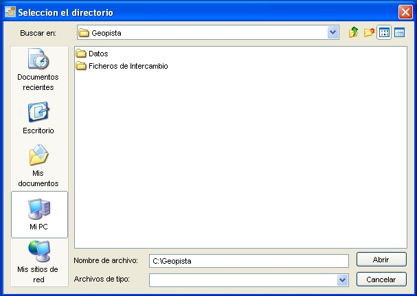

Específicamente el modulo de exportación contempla la generación de ficheros en formato de FIN entrada y su envío mediante servicios Web a la OVC.
Según la modalidad sobre la cual se trabaje, la exportación de la información se realizará mediante ficheros FIN entrada relativos a uno o varios expedientes a la vez. De esta forma, cuando un usuario en el modo acoplado finalice un expediente, en la pantalla de gestión se le activará la opción de exportar y enviar todos los cambios realizados a la OVC para su comprobación y aplicación. Para dicho intercambio será necesario introducir el certificado digital obligatorio como se muestra a continuación.
NOTA : El intercambio de información entre la aplicación y los servicios Web de la OVC se está realizando mediante simulación, por lo que no se solicitara dicho certificado al usuario y el resultado de este proceso podrá consultarse en la ruta: GeoPISTA/Datos/FinEntrada.xml
En el caso desacoplado, el usuario administrador tendrá que acceder a la opción de de generación y envío en el menú principal de la aplicación, para así crear el FIN de Entrada Masivo en el que se incluirán, tanto los expedientes finalizados desde el último envío de información a catastro, como aquellos que se han creado hasta entonces y no se han comunicado. Para ello deberá proporcionar la ruta donde se escribirá el fichero generado como se muestra a continuación.

